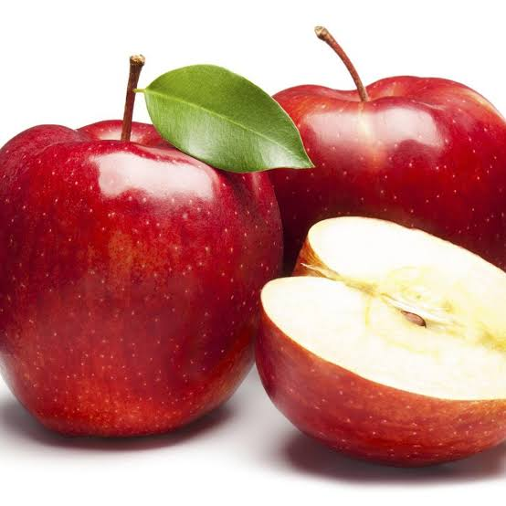

tentangbuah.com
Apel

Apel adalah jenis buah-buahan, atau buah yang dihasilkan dari pohon buah apel. Buah apel biasanya berwarna merah kulitnya jika masak dan (siap dimakan), namun bisa juga kulitnya berwarna hijau atau kuning. kulit buahnya agak lembek, daging buahnya keras. Buah ini memiliki beberapa biji di dalamnya.
Orang mulai pertama kali menanam apel di Asia Tengah. Kini apel berkembang di banyak daerah di dunia yang suhu udaranya lebih dingin. Nama ilmiah pohon apel dalam bahasa Latin ialahMalus domestica. Apel budidaya adalah keturunan dari Malus sieversii asal Asia Tengah, dengan sebagian genom dari Malus sylvestris (apel hutan/apel liar)
kebanyakan apel bagus dimakan mentah-mentah (tak dimasak), dan juga digunakan banyak jenis mekanan pesta. Apel dimasak sampai lembek untuk dibuat saus apel. Apel juga dibuat untuk menjadi minuman sari buah apel.
Lorem ibsum paquito layla miya by one anjime beliau ini ancrit banget banh luwh asix bagttt lu sok asik bangst pada jaman jahulu terdapat sebuah kerajaan iblis yang di pimpin oleh maou sama bernama berbatos yang melakukan invansi dunia manusia watashi wa sukidesu anata wa kirei desu ka watashi kekondesu with me please i want married with anime character
Khasiat Apel
- Meningkatkan daya memori
- Baik untuk usus
- Meningkatkan sistem kekebalan tubuh
- Baik untuk jantung
- Menurunkan tekanan darah
- Mengurangi resiko diabetes
Daftar Harga
| Jenis Apel | harga | |
|---|---|---|
| Per kil | Per biji | |
| Apel manalagi | 50.000 | 5.000 |
| Apel Fuji | 60.000 | 6.000 |
| Apel Anna | 70.000 | 7.000 |
| Apel Merah | 55.000 | 5.500 |